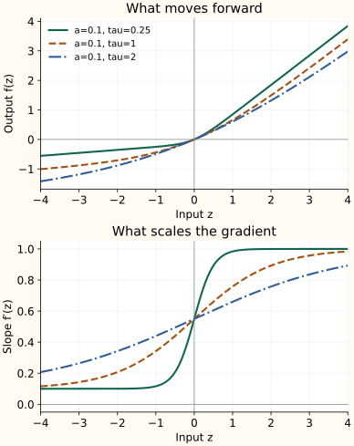

How to Design an Activation Function
Design starts with a behavior you want. A formula becomes useful when you can explain its output, its derivative, its numerical behavior, and how you would test it. We will construct one function for that purpose; this is a teaching design, not a claim of a new state-of-the-art activation.
Choose the requirements first
Suppose a hidden layer needs a smooth activation that passes large positive inputs with slope near one, retains a nonzero negative slope, and maps zero to zero. These are our choices for this exercise. They are not universal requirements: GELU and SiLU deliberately have a non-monotonic region.
Use $a$ for the desired negative slope, with $0
Design the slope before the output
A sigmoid rises smoothly from zero to one. Scale and shift it so the slope instead rises from $a$ to 1:
The constant $a$ supplies the minimum slope. The term $1-a$ supplies the remaining rise. Dividing by $\tau$ stretches the transition: larger $\tau$ changes the slope more gradually.
We already know that scaled Softplus has derivative $\sigma(z/\tau)$:
The outside $\tau$ cancels the $1/\tau$ from the chain rule. Integrating our desired slope therefore gives a linear term plus a scaled Softplus. Subtract its value at zero to make the output zero there:
The subtraction changes the output's offset, not the derivative. Setting $f(0)=0$ does not make the output distribution have zero mean.
Check what the formula actually guarantees
- At zero: the bracket is zero, so $f(0)=0$. The slope is $(1+a)/2$.
- Far below zero: the slope approaches $a$, and the output approaches the line $az-(1-a)\tau\log2$.
- Far above zero: the slope approaches 1, and the output approaches $z-(1-a)\tau\log2$.
- Everywhere: the slope stays between $a$ and 1, so this function is increasing and has no flat negative branch in exact arithmetic.
As $\tau$ approaches zero, the function approaches leaky ReLU. A very small $\tau$ also creates a sharp change in slope near zero. Its largest curvature is $(1-a)/(4\tau)$, so choosing tiny $\tau$ is not a free improvement.


Advantages and disadvantages of this design
For $0<a<1$ and $\tau>0$, the following properties come from the formula. They are not benchmark results:
| Aspect | Advantages | Disadvantages |
|---|---|---|
| Gradient shape | Smooth, increasing, and locally bounded between slopes $a$ and 1. There is no flat negative branch in exact arithmetic. | A nonzero scalar slope does not prevent gradients from weakening or growing through the complete network. |
| Control | Separates the negative slope from transition width and maps zero to zero. | Adds two settings to choose or constrain when learned. Zero input mapping to zero does not ensure zero-mean activations; tiny $\tau$ increases curvature. |
| Implementation and evidence | Can be computed with stable logaddexp and checked against an analytic derivative. | Needs more arithmetic than a piecewise linear rule. Better training quality, latency, or memory use must be demonstrated rather than inferred from the curve. |
Implement the same formula stably
Direct exponentiation can overflow. NumPy's logaddexp computes $\log(e^u+e^v)$ stably, so use $u=0$ and $v=z/\tau$:
import numpy as np
def smooth_leaky(z, a=0.1, tau=1.0):
if not (0 < a < 1 and tau > 0):
raise ValueError("Require 0 < a < 1 and tau > 0")
soft = np.logaddexp(0, z / tau)
return a*z + (1-a)*tau*(soft - np.log(2))This version treats $a$ and $\tau$ as fixed settings. If you learn them, constrain their ranges—for example with sigmoid and Softplus transformations—and differentiate through those transformations. Test the actual dtype and input scale; stable exponent handling does not make arbitrarily tiny $\tau$ safe in every precision.
Check the derivative independently
At several input values, compare the analytic derivative with a centered finite difference:
Use float64 and several reasonable step sizes; a step that is too tiny suffers cancellation. Include zero, both tails, and the transition region. At a genuine corner such as ReLU's zero, compare one-sided slopes instead of expecting an ordinary derivative.
The companion calculation script checks this design for multiple $a,\tau$ settings, verifies the zero value and slope bounds, and reproduces the plots. These are mathematical checks, not evidence of better training.
Check the function inside a network
Inspect layer-by-layer activation means, variances, average squares, and gradient magnitudes on representative inputs. A nonzero scalar slope does not guarantee healthy gradients through a deep network. Weights, normalization, and residual paths also matter.
Revisit initialization when the activation changes. For our function, the transition width and offsets change activation statistics, so blindly copying a ReLU scaling rule is not justified. The activation-aware initialization guide gives the relevant distinction between variance and second moment.
Decide whether the design earns its cost
Compare against ReLU, GELU, and SiLU in the same model and data split. Run multiple seeds. First measure a controlled replacement with other settings fixed; then give each activation the same tuning budget so a mismatched learning rate does not decide the result.
Report validation quality, training stability, runtime, and peak memory on the intended hardware. If comparing with SwiGLU, match the feed-forward parameter or compute budget because gating adds a projection. Choose settings using validation data and reserve the test set for the final evaluation.
A useful result is evidence of a repeatable benefit at an acceptable cost. If the simpler baseline matches it, the new formula has not yet earned a place in the model. Activation-function search is another way to propose candidates; it still needs that empirical comparison.